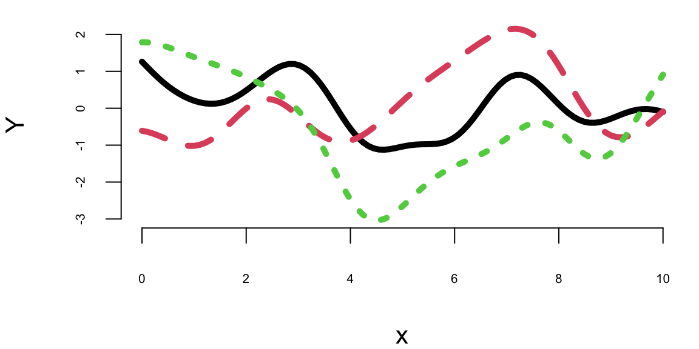
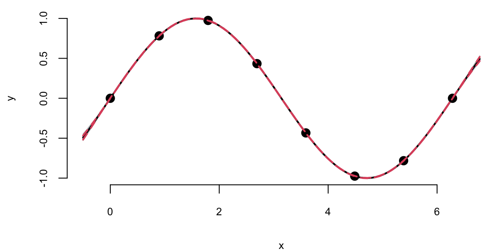
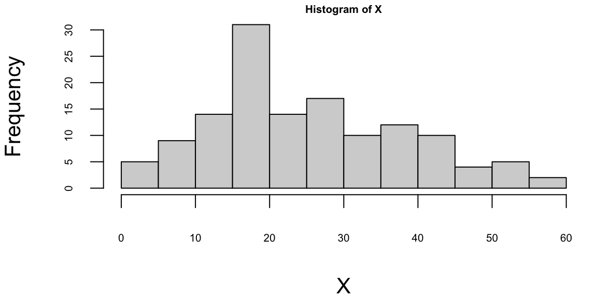

x = seq(0,10, length.out = 100)8 Gaussian Processes
“Uncertainty is the only certainty there is, and knowing how to live with insecurity is the only security.” —John Allen Paulos
In traditional regression, we often find a single “best” line that fits the data (e.g., \(y = mx + b\)). But reality is rarely so simple. What if we want to model not just the trend, but our uncertainty about it? What if, instead of committing to a single function, we could consider an infinite number of possible functions consistent with our data?
A Gaussian Process (GP) allows us to do exactly that. Instead of estimating parameters for a specific function, we define a probability distribution over all possible functions that fit the data. It is a powerful, non-parametric tool used extensively in machine learning for tasks ranging from robotic control to geospatial analysis.
Formally, a GP is a collection of random variables, any finite number of which have a joint Gaussian distribution. A finite collection of \(n\) points drawn from a GP is completely specified by its \(n\)-dimensional mean vector \(\boldsymbol{\mu}\) and covariance matrix \(\mathbf{\Sigma}\). We assume the process is indexed by a real variable \(x\in\mathbb{R}\) (e.g., time or space) and has real-valued outputs. The GP is defined by: 1. Mean function \(m(x) = \mathbb{E}[f(x)]\): The expected value of the function at point \(x\). 2. Covariance (Kernel) function \(k(x, x') = \mathbb{E}[(f(x) - m(x))(f(x') - m(x'))]\): A measure of similarity between values at \(x\) and \(x'\).
We denote this as: \[ f(x) \sim \mathcal{GP}(m(x), k(x, x')). \]
Intuitively, the kernel function determines the “shape” and “smoothness” of the functions we expect to see. If \(x\) and \(x'\) are close, \(k(x, x')\) should be high, implying \(f(x)\) and \(f(x')\) are likely similar.
In practice, we often assume a zero mean, \(m(x)=0\), and focus on the covariance kernel. The choice of kernel encodes our prior beliefs about the data. The most common choice is the Squared Exponential (SE) kernel (also known as the Radial Basis Function or RBF):
\[ k(x, x') = \sigma^2 \exp\left(-\frac{(x - x')^2}{2l^2}\right) \]
Here, we have two hyperparameters:
- \(\sigma^2\) (Signal Variance): Controls the vertical amplitude of the function.
- \(l\) (Length Scale): Controls the horizontal “wiggliness.” A large \(l\) implies the function changes slowly (smooth), while a small \(l\) allows for rapid variations.
Observe that \(k(x,x) = \sigma^2\) and \(k(x,x') \rightarrow 0\) as the distance \(|x-x'| \rightarrow \infty\).
We can illustrate a GP with a simulated example. First generate a sequence of 100 input points (indices)
and then define the mean function and the covariance function
mean = rep(0, length(x))
sqexpcov = function(x, x1, l=1, sigma=1) {
exp(-0.5 * (x - x1)^2 / l^2) * sigma^2
}The covariance function depends only on the distance between two points, not on their absolute values. The squared exponential kernel is infinitely differentiable, which means that the GP is a very smooth function. The squared exponential kernel is also called the radial basis function (RBF) kernel. The covariance matrix is then defined as
cov_mat = outer(x, x, sqexpcov)and we can generate a sample from the GP using the mvrnorm function from the MASS package and plot a sample.
library(MASS)
set.seed(17)
Y = mvrnorm(1, mean, cov_mat)
plot(x, Y, type="l", xlab="x", ylab="y", ylim=c(-1.5,2), lwd=2, col="blue")
Figure 8.1 displays 100 values of a function \(f(x)\) drawn from a GP with zero mean and a squared-exponential kernel at inputs \(x=(0,0.1,0.2,\ldots,10)\). The realisation is smooth, with most values lying between -2 and 2. Because each diagonal element of the covariance matrix equals \(\sigma^2=1\), the marginal variance is one. By properties of the normal distribution, approximately 95 percent of the points of \(Y\) should therefore fall within 1.96 standard deviations of the mean. The mild oscillations arise because values with neighbouring indices are highly correlated.
We can generate a few more samples from the same GP and plot them together
Ys = mvrnorm(3, mean, cov_mat)
matplot(x, t(Ys), type="l", ylab="Y", lwd=5)

Each finite sample path differs from the next, yet all share a similar range, a comparable number of bumps, and overall smoothness. That’s what it means to have function realizations under a GP prior: \(Y = f(x) \sim \mathcal{GP}(0, k(x, x'))\)
Simulating from the prior shows us the richness of possible functions we can model. However, our goal is not just to generate random curves, but to learn. We want to constrain these possibilities using actual observations.
8.1 Making Predictions with Gaussian Processes
Suppose our observed data consists of \(n\) inputs \(\mathbf{X}=(x_1,\ldots,x_n)^T\) and outputs \(\mathbf{y}=(y_1,\ldots,y_n)^T\). We assume these are a realization of a GP. Our goal is to predict the outputs \(\mathbf{y}_*\) at new inputs \(\mathbf{X}_*\).
By definition of a GP, the joint distribution of the observed data \(\mathbf{y}\) and the predictions \(\mathbf{y}_*\) is a multivariate Gaussian:
\[ \begin{bmatrix} \mathbf{y} \\ \mathbf{y}_* \end{bmatrix} \sim \mathcal{N} \left ( \begin{bmatrix} \boldsymbol{\mu} \\ \boldsymbol{\mu}_* \end{bmatrix}, \begin{bmatrix} \mathbf{K} & \mathbf{K}_* \\ \mathbf{K}_*^T & \mathbf{K}_{**} \end{bmatrix} \right ) \]
where: * \(\mathbf{K} = k(\mathbf{X}, \mathbf{X})\in \mathbb{R}^{n\times n}\) is the covariance of the training data. * \(\mathbf{K}_* = k(\mathbf{X}, \mathbf{X}_*)\in \mathbb{R}^{n\times q}\) is the covariance between training and test data. * \(\mathbf{K}_{**} = k(\mathbf{X}_*, \mathbf{X}_*) \in \mathbb{R}^{q\times q}\) is the covariance of the test data. * \(\boldsymbol{\mu} = \mathbb{E}[\mathbf{y}]\) and \(\boldsymbol{\mu}_* = \mathbb{E}[\mathbf{y}_*]\).
The beauty of Gaussians is that conditioning on observed data is closed-form. The conditional distribution of \(\mathbf{y}_*\) given \(\mathbf{y}\) is:
\[ \mathbf{y}_* \mid \mathbf{y}, \mathbf{X}, \mathbf{X}_* \sim \mathcal{N}(\boldsymbol{\mu}_{\mathrm{post}}, \boldsymbol{\Sigma}_{\mathrm{post}}) \]
The posterior mean \(\boldsymbol{\mu}_{\mathrm{post}}\) serves as our prediction, and the posterior covariance \(\boldsymbol{\Sigma}_{\mathrm{post}}\) quantifies our uncertainty:
\[ \boldsymbol{\mu}_{\mathrm{post}} = \boldsymbol{\mu}_* + \mathbf{K}_*^T\mathbf{K}^{-1} (\mathbf{y} - \boldsymbol{\mu}) \tag{8.1}\]
\[ \boldsymbol{\Sigma}_{\mathrm{post}} = \mathbf{K}_{**} - \mathbf{K}_*^T \mathbf{K}^{-1} \mathbf{K}_* \tag{8.2}\]
Equation 8.1 and Equation 8.2 are standard properties of the multivariate normal distribution (see Chapter 3 and Appendix Chapter 26). Intuitively, the posterior variance \(\boldsymbol{\Sigma}_{\mathrm{post}}\) is equal to the prior variance \(\mathbf{K}_{**}\) minus a term representing the information gained from the observed data. This structure reflects a fundamental Bayesian principle: data acts to reduce our prior uncertainty (represented by the second term in Equation 8.2).
Example 8.1 (Gaussian Process for \(\sin\) function) We can use the GP to make predictions about the output values at new inputs \(x_*\). We use \(x\) in the [0,\(2\pi\)] range and \(y\) to be the \(y = \sin(x)\). We start by simulating the observed \(x\)-\(y\) pairs.
n = 8; eps=1e-6
X = matrix(seq(0, 2*pi, length=n), ncol=1)
Y = sin(X)
K = outer(X[,1], X[,1], sqexpcov) + diag(eps, n)The additive term diag(eps, n) corresponds to adding \(\epsilon \mathbf{I}\), which stabilizes the matrix inversion by ensuring strict positive definiteness; in machine learning practice, this is known as ‘jitter’. Now we implement a function that calculates the mean and covariance of the posterior distribution of \(y_*\) given \(Y\).
Now we generate a new set of inputs \(x_*\) and calculate the covariance matrices \(K_*\) and \(K_{**}\).
q = 100
XX = matrix(seq(-0.5, 2*pi + 0.5, length=q), ncol=1)
KX = outer(X[,1], XX[,1],sqexpcov)
KXX = outer(XX[,1],XX[,1], sqexpcov) + diag(eps, q)Notice that we did not add \(\epsilon I\) to \(K_*\) = KX matrix, but we add it to \(K_{**}\) = KXX to ensure the posterior covariance is invertible. We do not add it to \(K_*\) (KX) as it represents cross-covariance, which does not need to be positive definite. Now we can calculate the mean and covariance of the posterior distribution of \(y_*\) given \(Y\).
Si = solve(K)
mup = t(KX) %*% Si %*% Y # we assume mu is 0
Sigmap = KXX - t(KX) %*% Si %*% KXNow, we can generate a sample from the posterior distribution over \(y_*\), given \(Y\)
YY = mvrnorm(100, mup, Sigmap)Using our convenience function plot_gp we can plot the posterior distribution over \(y_*\), given \(Y\).
plot_gp = function(mup, Sigmap, X, Y, XX, YY){
q1 = mup + qnorm(0.05, 0, sqrt(diag(Sigmap)))
q2 = mup + qnorm(0.95, 0, sqrt(diag(Sigmap)))
matplot(XX, t(YY), type="l", col="gray", lty=1, xlab="x", ylab="y")
points(X, Y, pch=20, cex=2)
lines(XX, sin(XX), col="blue")
lines(XX, mup, lwd=2)
lines(XX, q1, lwd=2, lty=2, col=2)
lines(XX, q2, lwd=2, lty=2, col=2)
}plot_gp(mup, Sigmap, X, Y, XX, YY)
Example 8.2 (Gaussian Process for Simulated Data using MLE) In the previous example, we assumed fixed values for the hyperparameters: \(\sigma^2 = 1\) and \(l^2 = 0.5\) (since \(2l^2=1\)). In real applications, we don’t know these values; we must estimate them from the data.
We use Maximum Likelihood Estimation (MLE) to find the parameters that maximize the probability of observing our data. This parallels the likelihood-to-loss framing in Chapter 11: we write down a (marginal) likelihood for the data and then optimize it, often via its log-likelihood. This section relies on basic matrix operations (inverse, determinant); Appendix Chapter 26 provides a short refresher. If you have not seen gradient-based optimization, the core intuition appears in Chapter 20; here we use it only as a practical tool to fit GP hyperparameters.
The marginal likelihood of the data \(\mathbf{y}\) (integrating out the function values \(f\)) is:
\[ p(\mathbf{y} \mid \mathbf{X}, \sigma, l) = \frac{1}{(2\pi)^{n/2} |\mathbf{K}|^{1/2}} \exp \left ( -\frac{1}{2} \mathbf{y}^T \mathbf{K}^{-1} \mathbf{y} \right ) \]
where \(\mathbf{K}\) is the covariance matrix computed with hyperparameters \(\sigma\) and \(l\). For numerical stability, we typically maximize the log-likelihood:
\[ \log p(\mathbf{y} \mid \mathbf{X}, \sigma, l) = -\frac{1}{2} \log |\mathbf{K}| - \frac{1}{2} \mathbf{y}^T \mathbf{K}^{-1} \mathbf{y} - \frac{n}{2} \log 2\pi. \]
This equation encapsulates Occam’s Razor. The term \(-\frac{1}{2} \mathbf{y}^T \mathbf{K}^{-1} \mathbf{y}\) rewards the model for fitting the data well. The term \(-\frac{1}{2} \log |\mathbf{K}|\) penalizes model complexity; a more flexible kernel (e.g., smaller length scale) leads to a simpler determinant term that exacts a cost. MLE automatically balances these two competing objectives to prevent overfitting.
We can implement a function that calculates the log-likelihood of the data given the hyperparameters \(\sigma\) and \(l\) and use optim function to find the maximum of the log-likelihood function.
loglik = function(par, X, Y) {
sigma = par[1]
l = par[2]
K = outer(X[,1],X[,1], sqexpcov,l,sigma) + diag(eps, n)
Si = solve(K)
return(-(-0.5 * log(det(K)) - 0.5 * t(Y) %*% Si %*% Y - (n/2)* log(2*pi)))
}
par = optim(c(1,1), loglik, X=X, Y=Y)$par
print(par)
## 1.5 2.4The optim function returns the hyperparameters that maximize the log-likelihood function. We can now use those hyperparameters to make predictions about the output values at new inputs \(x_*\).
l = par[2]; sigma = par[1]
predplot = function(X, Y, XX, YY, l, sigma) {
K = outer(X[,1],X[,1], sqexpcov,l,sigma) + diag(eps, n)
KX = outer(X[,1], XX[,1],sqexpcov,l,sigma)
KXX = outer(XX[,1],XX[,1], sqexpcov,l,sigma) + diag(eps, q)
Si = solve(K)
mup = t(KX) %*% Si %*% Y # we assume mu is 0
Sigmap = KXX - t(KX) %*% Si %*% KX
YY = mvrnorm(100, mup, Sigmap)
plot_gp(mup, Sigmap, X, Y, XX, YY)
}
predplot(X, Y, XX, YY, l, sigma)We can see that our uncertainty is much narrower—the posterior distribution is considerably tighter. This is because we used the observed data to estimate the hyperparameters. We can also see that the posterior mean is closer to the true function \(y = \sin(x)\). Although our initial guess of \(\sigma^2 = 1\) and \(2l^2 = 1\) was not too far off, the model fits the data much better when we use the estimated hyperparameters.
The default optim function uses numerical approximations for derivatives. While convenient, this can be slow and less precise. For GPs, we can calculate the analytical gradients of the log-likelihood with respect to the hyperparameters, significantly speeding up optimization.
Now we can implement a function that calculates the derivative of the log-likelihood function with respect to \(\sigma\) and \(l\).
# Derivative of the log-likelihood function with respect to sigma
dloglik_sigma = function(par, X, Y) {
sigma = par[1]; l = par[2]
K = outer(X[,1],X[,1], sqexpcov,l,sigma) + diag(eps, n)
Si = solve(K)
dK = 2*K/sigma
tr = sum(diag(Si %*% dK))
return(-(-0.5 * tr + 0.5 * t(Y) %*% Si %*% dK %*% Si %*% Y))
}
# Derivative of the log-likelihood function with respect to l
dloglik_l = function(par, X, Y) {
sigma = par[1]; l = par[2]
K = outer(X[,1],X[,1], sqexpcov ,l,sigma) + diag(eps, n)
Si = solve(K)
dK = outer(X[,1],X[,1], function(x, x1) (x - x1)^2)/l^3 * K
tr = sum(diag(Si %*% dK))
return(-(-0.5 * tr + 0.5 * t(Y) %*% Si %*% dK %*% Si %*% Y))
}
# Gradient function that returns a vector of derivatives
gnlg = function(par,X,Y) {
return(c(dloglik_sigma(par, X, Y), dloglik_l(par, X, Y)))
}Now we can use the optim function to find the maximum of the log-likelihood function and provide the derivative function we just implemented.
par1 = optim(c(1,1), fn=loglik, gr=gnlg ,X=X, Y=Y,method="BFGS")$par
l = par1[2]; sigma = par1[1]
print(par1)
## 1.5 2.4The result is the same compared to when we called optim without the derivative function. Even execution time is the same for our small problem. However, at larger scale, the derivative-based optimization algorithm will be much faster.
Furthermore, instead of coding our own derivative functions, we can use an existing package, such as the laGP package, developed by Bobby Gramacy to estimate the hyperparameters. The laGP package uses the same optimization algorithm we used above, but it also provides better selection of the covariance functions and implements approximate GP inference algorithms for large scale problems, when \(n\) becomes large and inversion of the covariance matrix \(K\) is prohibitively expensive.
library(laGP)
gp = newGP(X, Y, 1, 0, dK = TRUE)
res = mleGP(gp, tmax=20)
l.laGP = sqrt(res$d/2)
print(l.laGP)
## 2.4In the newGP function defines a Gaussian process with square exponential covariance function and assumes \(\sigma^2 = 1\), then mleGP function uses optimization algorithm to maximize the log-likelihood and returns the estimated hyperparameters d = \(2l^2\), we can see that the length scale is close to the one we estimated above. We will use the predplot convenience function to calculate the predictions and plot the data vs fit.
predplot(X, Y, XX, YY, l, sigma)
predplot(X, Y, XX, YY, l.laGP, 1)
We can see that there is visually no difference between the two fits. Thus, it seems irrelevant whether we keep sigma fixed \(\sigma=1\) or estimate it using MLE. However, in other applications when uncertainty is larger, the choice of \(\sigma\) is important when we use GP for regression and classification tasks. Even for our example, if we ask our model to extrapolate
XX1 = matrix(seq(-4*pi, 6*pi + 0.5, length=q), ncol=1)
predplot(X, Y, XX1, YY, l, sigma)
predplot(X, Y, XX1, YY, l.laGP, 1)

Extrapolation: Posterior distribution over \(y_*\), given \(Y\)
We can see that outside of the range of the observed data, the model with \(\sigma=1\) is more confident in its predictions.
Now, instead of using GP to fit a known function (\(\sin\)), we will apply it to a real-world data set. We will use the motorcycle accident data set from the MASS package. The data set contains accelerator readings taken through time in a simulated experiment on the efficacy of crash helmets. This data is non-linear and exhibits varying curvature, making it an excellent candidate for GP regression where linear models would fail.
Example 8.3 (Gaussian Process for Motorcycle Accident Data) We first estimate the length scale parameter \(l\) using the laGP package.
library(MASS)
X = mcycle$times
Y = mcycle$accel
gp = newGP(matrix(X), Y, 2, 1e-6, dK = TRUE);
mleGP(gp, tmax=10);Now we plot the data and the fit using the estimated length scale parameter \(l\).
XX = matrix(seq(2.4, 55, length = 499), ncol=1)
p = predGP(gp, XX)
N = 499
q1 = qnorm(0.05, mean = p$mean, sd = sqrt(diag(p$Sigma)))
q2 = qnorm(0.95, mean = p$mean, sd = sqrt(diag(p$Sigma)))
q3 = qnorm(0.5, mean = p$mean, sd = sqrt(diag(p$Sigma)))
ggplot() +
geom_point(aes(x=X,y=Y)) +
geom_line(aes(x=XX,y=q3)) +
geom_ribbon(aes(x=XX,ymin=q1, ymax=q2), alpha=0.2)
We can see that our model is more confident for time values between 10 and 30. The confidence interval is wider for time values between 0 and 10 and between 30 and 60, and less confident at the end close to the 60 mark. For some reason the acceleration values were not measured evenly. If we look at the histogram of time values, we can see that there are more data points in the middle of the time range.
hist(X)
The widening of the confidence intervals in regions with fewer data points (e.g., between 30 and 40) is a natural property of the GP; where data is sparse, the model reverts to the prior covariance, resulting in higher uncertainty.
In summary, Gaussian Processes provide a robust and flexible framework for modeling functions where uncertainty is key. By defining a prior over functions and updating it with data, we obtain a posterior distribution that captures both predictions and the confidence in those predictions. The key features of GPs are:
- Non-parametric: GPs can model functions of arbitrary complexity without a fixed number of parameters.
- Data-efficient: They work well with small datasets and provide uncertainty estimates that are crucial for decision-making.
- Versatile: Through the choice of the kernel function, GPs can capture various structures (smoothness, periodicity, etc.) and are used in fields ranging from environmental modeling to hyperparameter optimization in deep learning (“Bayesian Optimization”).